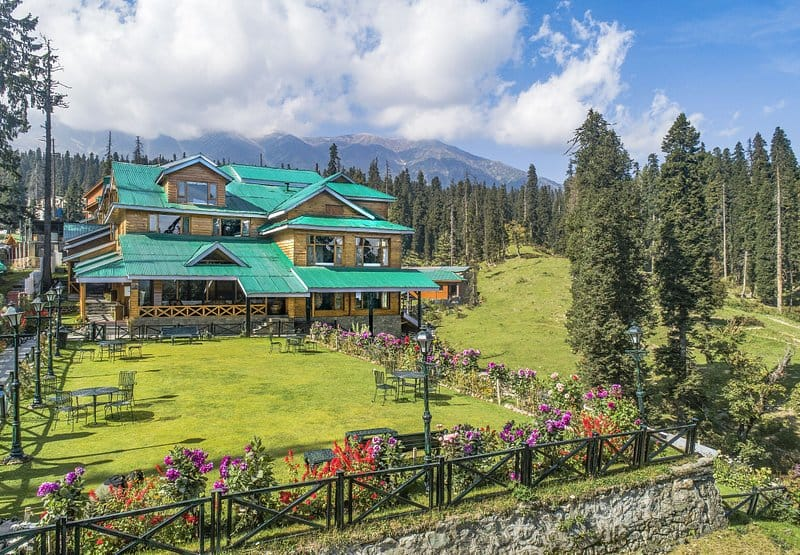
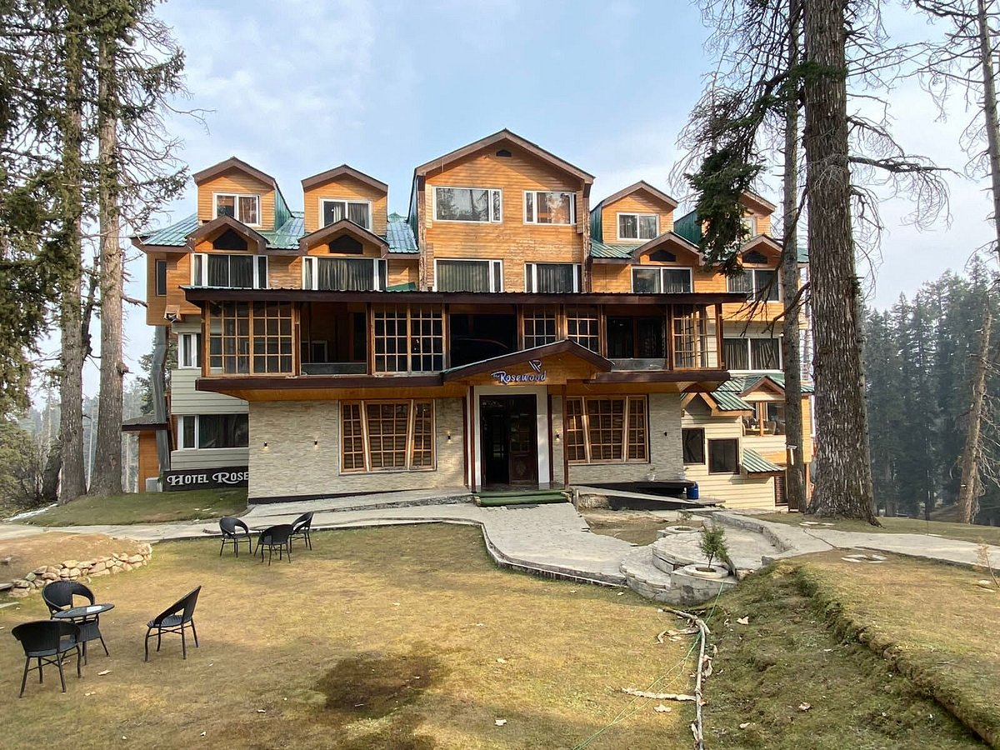
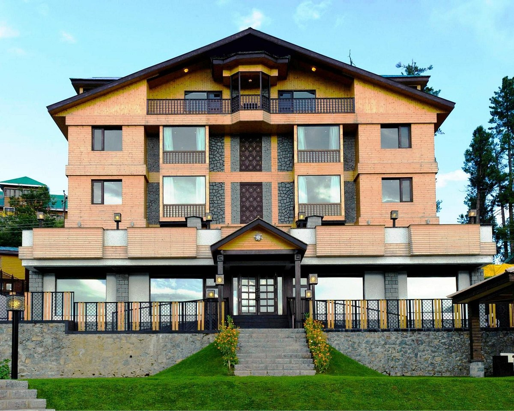
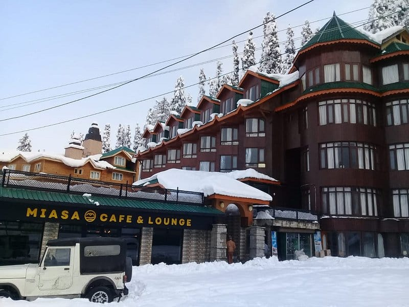

Restaurants

Nedou's Hotel
Nedou's Hotel in Gulmarg, a historic and elegant retreat nestled in the scenic beauty of Kashmir, offers guests a luxurious blend of heritage and modern comforts.
Location

Hotel Heaven Retreat
Hotel Heaven Retreat in Gulmarg offers a serene mountain getaway with stunning views, luxurious amenities, and warm hospitality.
Location

The RoseWood Hotel
The RoseWood Hotel in Gulmarg offers a blend of luxury and comfort with stunning views of the Himalayan mountains.
Location

The Vintage Gulmarg Restaurant
"The Vintage Gulmarg Restaurant in Gulmarg offers a delightful blend of Kashmiri cuisine amidst stunning mountain views."
Location

Hotel Hill Top
Hotel Hill Top in Gulmarg offers panoramic views of the surrounding snow-capped mountains, combining comfort with a picturesque location for a memorable stay.
Location